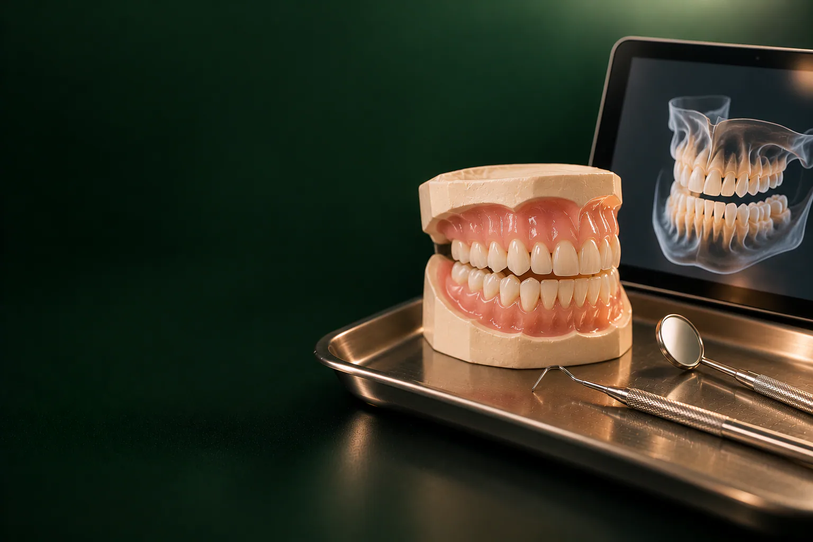

Раджабов Азамат Назирович
Хирург, имплантолог
Удаление зубов и имплантация, хирургия в сложных случаях
Записаться к врачу
Бесплатная консультация стоматолога: простой способ понять, что происходит с зубами и сколько будет стоить лечение.
Имеются противопоказания. Необходима консультация специалиста.
В стоматологии «Умная Медицина» в пос. Удельная (Раменский округ) терапевт, хирург-имплантолог и ортопед принимают на консультацию за 0 ₽: врач осматривает зубы и дёсны, при необходимости назначает снимок и составляет план лечения с ценой каждого этапа. Консультация ортодонта стоит 1 700 ₽, детского стоматолога: 2 500 ₽.
Первичный и повторный приём у терапевта, хирурга-имплантолога и ортопеда бесплатны: вы ничего не платите за осмотр и план лечения, даже если решите подумать и начать позже. Отдельно оплачиваются только консультации ортодонта и детского стоматолога, а также снимки, если врач их назначил.
Все цены на лечение собраны на странице цены. Цены актуальны на 18.10.2026.
уточняем у клиники
Консультация: это разговор с врачом, после которого у вас на руках понятный план. Обычно приём проходит так:
Даже если ничего не болит, регулярный осмотр помогает заметить проблему раньше. уточняем у клиники
Не обязательно знать диагноз заранее. Ориентируйтесь на то, что беспокоит, администратор при записи подскажет, к кому записаться.
Если проблем несколько: например, нужно и удалить зуб, и восстановить его имплантом с коронкой, план обсуждают хирург-имплантолог и ортопед вместе.
Снимок назначают, только если без него нельзя поставить диагноз или спланировать лечение.
Если у вас есть свежие снимки или КТ из другой клиники, возьмите их с собой: врач оценит, подходят ли они, и, возможно, повторять исследование не придётся.
Главный итог приёма: план лечения зубов, в котором видно, что и в каком порядке нужно сделать. Сначала снимают боль и воспаление, затем лечат кариес и каналы, удаляют зубы, которые нельзя сохранить, и после этого переходят к имплантации, протезированию или исправлению прикуса.
У каждого этапа своя цена, поэтому вы заранее знаете общую сумму и можете распределить лечение по времени. Если вариантов несколько: например, сохранить зуб или заменить его имплантом, поставить металлокерамическую или циркониевую коронку, врач объяснит разницу и поможет выбрать. План можно взять домой и спокойно обдумать: бесплатная консультация ни к чему не обязывает.
Первичный осмотр стоматолога нужен, когда вы пришли в клинику впервые или давно не были у зубного врача. Повторная консультация пригодится, если вы обдумали план и хотите задать вопросы, выбрать вариант лечения или обсудить новые снимки. У терапевта, хирурга-имплантолога и ортопеда повторный приём тоже стоит 0 ₽.
Женская консультация обычно направляет будущую маму к стоматологу, чтобы проверить зубы и при необходимости вылечить их до родов. Обязательно скажите врачу о беременности и сроке: от этого зависит, какое лечение можно провести сейчас, а какое разумнее перенести. Рентген во время беременности делают только по строгим показаниям. уточняем у клиники
Детский стоматолог осматривает молочные и постоянные зубы, проверяет, как они прорезаются, и составляет план лечения. Первичная консультация стоит 2 500 ₽, повторная: 2 000 ₽. Если нужна справка для детского сада, школы или лагеря, запишитесь на профосмотр со справкой: 2 500 ₽. При стоматите врач проводит отдельную консультацию с диагностикой и планом лечения.
Поставить диагноз без осмотра нельзя, но задать вопрос заранее можно. Цифровые снимки клиника отправляет по электронной почте, поэтому их можно показать врачу и обсудить дистанционно. уточняем у клиники
Запись на консультацию к стоматологу, по телефону или через форму на сайте: оставьте имя и номер, администратор перезвонит, подберёт врача и удобное время. Стоматология работает ежедневно с 9:00 до 21:00 уточняем у клиники. Если болит зуб, скажите об этом при записи: вас постараются принять в ближайшее время уточняем у клиники.
На консультацию к нам приезжают из Удельной, Жуковского и соседних посёлков, а также из Люберец и Раменского.
Каждый врач консультирует по своему направлению. Все специалисты: на странице врачи клиники.
Хирург, имплантолог
Удаление зубов и имплантация, хирургия в сложных случаях
Записаться к врачу
Хирург, имплантолог
Имплантация, удаление зубов и подготовка к имплантации
Записаться к врачу
Главный врач, ортопед
Протезирование и восстановление зубов, протезы на имплантах
Записаться к врачу
Ортопед
Восстановление зубов и протезирование, эстетичные коронки
Записаться к врачу
Терапевт, эндодонтист
Лечение кариеса и каналов, сохранение зубов
Записаться к врачу
Терапевт, ортодонт
Эстетическая реставрация и прикус
Записаться к врачу
Детский стоматолог
Дети, профилактика и лечение детских зубов
Записаться к врачуЗдесь публикуем отзывы пациентов о первом визите: только с их письменного согласия.
отзыв пациента
Беседа о жалобах, осмотр зубов, дёсен, пломб, коронок и прикуса, при необходимости: снимок. В конце врач объясняет, что нашёл, и составляет план лечения с ценой каждого этапа.
Да, у терапевта, хирурга-имплантолога и ортопеда первичный и повторный приём с планом лечения стоят 0 ₽. Платные консультации, у ортодонта (1 700 ₽) и детского стоматолога (2 500 ₽, повторная, 2 000 ₽).
Снимки оплачиваются отдельно, если врач их назначил: прицельный, 500 ₽, панорамный, 1 700 ₽, КТ, от 2 000 ₽. Если у вас есть свежие снимки, возьмите их с собой.
Нет. План можно взять с собой и обдумать. Но если вы оплачиваете лечение в день консультации, действует скидка 10% уточняем у клиники.
Опишите проблему администратору при записи: он подберёт специалиста. Если вопросов несколько, начните с терапевта: он осмотрит все зубы и при необходимости направит к хирургу, ортопеду или ортодонту.
Да. Хирург-имплантолог оценит состояние кости по КТ и скажет, можно ли поставить имплант сразу или сначала нужна костная пластика. Консультация бесплатная.
уточняем у клиники Первую консультацию обычно советуют после прорезывания первых зубов, а дальше, регулярные профосмотры.
По телефону или через форму на сайте, администратор перезвонит и подберёт время.
Запишитесь на консультацию: план лечения с ценой по этапам
Имеются противопоказания. Необходима консультация специалиста.
Адрес клиники: Московская обл., Раменский округ, пос. Удельная, ул. Громова, 10/2. Клиника рядом с Жуковским; по соседству Малаховка, Быково, Ильинский, Родники, Островцы, Красково и Октябрьский. Пациенты приезжают и из Люберец, Раменского и Балашихи.
На машине: из Жуковского через Быково, без выезда в Москву. Парковка: уточняем у клиники.
На МЦД-3: до станции Удельная, от неё пешком до клиники. Из Жуковского: от станции Отдых три остановки без пересадок (Ильинская, Быково, Удельная).
На консультацию возьмите паспорт и прежние снимки, если они есть.
Подробнее о клинике: на странице стоматология в Удельной.
Имеются противопоказания. Необходима консультация специалиста.
пгт Удельная, Раменский округ, рядом с Жуковским.
Ежедневно с 9:00 до 21:00
+7 495 150-36-15К нам ездят из Жуковского, Раменского, Быкова, Ильинского, Красково, Малаховки, Островцов, Люберец и Балашихи.
Перезвоним за 5 минут, подберём врача и удобное время.
Оставьте номер, администратор перезвонит и ответит на вопросы.
Подойдёт КТ, панорама, прицельный снимок или фото плана лечения из другой клиники. Врач посмотрит и ответит в течение рабочего дня. Это бесплатно.
Хирург, ортопед и терапевт осмотрят вас вместе, сделаем КТ. Консультация бесплатная, стоимость лечения врач назовёт после осмотра.
Консультацию ведут вместе
ХирургМихаилОртопедЕвгенийТерапевтАртёмПервый визит бесплатно
Хирург, ортопед и терапевт посмотрят ваш случай вместе и предложат два-три варианта с ценой. Оставьте номер, администратор перезвонит и подберёт время.
Скидка 10% на лечение, если оплатить его в день консультации
Перезвоним за 5 минут, ежедневно с 9:00 до 21:00.